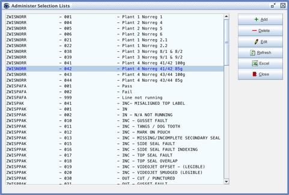

public class JInternalFrameQMSelectListAdmin
extends javax.swing.JInternalFrame

javax.swing.JInternalFrame.JDesktopIconCONTENT_PANE_PROPERTY, FRAME_ICON_PROPERTY, GLASS_PANE_PROPERTY, IS_CLOSED_PROPERTY, IS_ICON_PROPERTY, IS_MAXIMUM_PROPERTY, IS_SELECTED_PROPERTY, LAYERED_PANE_PROPERTY, MENU_BAR_PROPERTY, ROOT_PANE_PROPERTY, TITLE_PROPERTYTOOL_TIP_TEXT_KEY, UNDEFINED_CONDITION, WHEN_ANCESTOR_OF_FOCUSED_COMPONENT, WHEN_FOCUSED, WHEN_IN_FOCUSED_WINDOWBOTTOM_ALIGNMENT, CENTER_ALIGNMENT, LEFT_ALIGNMENT, RIGHT_ALIGNMENT, TOP_ALIGNMENT| Constructor and Description |
|---|
JInternalFrameQMSelectListAdmin() |
addInternalFrameListener, dispose, doDefaultCloseAction, getAccessibleContext, getContentPane, getDefaultCloseOperation, getDesktopIcon, getDesktopPane, getFocusCycleRootAncestor, getFocusOwner, getFrameIcon, getGlassPane, getInternalFrameListeners, getJMenuBar, getLastCursor, getLayer, getLayeredPane, getMenuBar, getMostRecentFocusOwner, getNormalBounds, getRootPane, getTitle, getUI, getUIClassID, getWarningString, hide, isClosable, isClosed, isFocusCycleRoot, isIcon, isIconifiable, isMaximizable, isMaximum, isResizable, isSelected, moveToBack, moveToFront, pack, remove, removeInternalFrameListener, reshape, restoreSubcomponentFocus, setClosable, setClosed, setContentPane, setCursor, setDefaultCloseOperation, setDesktopIcon, setFocusCycleRoot, setFrameIcon, setGlassPane, setIcon, setIconifiable, setJMenuBar, setLayer, setLayer, setLayeredPane, setLayout, setMaximizable, setMaximum, setMenuBar, setNormalBounds, setResizable, setSelected, setTitle, setUI, show, toBack, toFront, updateUIaddAncestorListener, addNotify, addVetoableChangeListener, computeVisibleRect, contains, createToolTip, disable, enable, firePropertyChange, firePropertyChange, firePropertyChange, getActionForKeyStroke, getActionMap, getAlignmentX, getAlignmentY, getAncestorListeners, getAutoscrolls, getBaseline, getBaselineResizeBehavior, getBorder, getBounds, getClientProperty, getComponentPopupMenu, getConditionForKeyStroke, getDebugGraphicsOptions, getDefaultLocale, getFontMetrics, getGraphics, getHeight, getInheritsPopupMenu, getInputMap, getInputMap, getInputVerifier, getInsets, getInsets, getListeners, getLocation, getMaximumSize, getMinimumSize, getNextFocusableComponent, getPopupLocation, getPreferredSize, getRegisteredKeyStrokes, getSize, getToolTipLocation, getToolTipText, getToolTipText, getTopLevelAncestor, getTransferHandler, getVerifyInputWhenFocusTarget, getVetoableChangeListeners, getVisibleRect, getWidth, getX, getY, grabFocus, isDoubleBuffered, isLightweightComponent, isManagingFocus, isOpaque, isOptimizedDrawingEnabled, isPaintingForPrint, isPaintingTile, isRequestFocusEnabled, isValidateRoot, paint, paintImmediately, paintImmediately, print, printAll, putClientProperty, registerKeyboardAction, registerKeyboardAction, removeAncestorListener, removeNotify, removeVetoableChangeListener, repaint, repaint, requestDefaultFocus, requestFocus, requestFocus, requestFocusInWindow, resetKeyboardActions, revalidate, scrollRectToVisible, setActionMap, setAlignmentX, setAlignmentY, setAutoscrolls, setBackground, setBorder, setComponentPopupMenu, setDebugGraphicsOptions, setDefaultLocale, setDoubleBuffered, setEnabled, setFocusTraversalKeys, setFont, setForeground, setInheritsPopupMenu, setInputMap, setInputVerifier, setMaximumSize, setMinimumSize, setNextFocusableComponent, setOpaque, setPreferredSize, setRequestFocusEnabled, setToolTipText, setTransferHandler, setVerifyInputWhenFocusTarget, setVisible, unregisterKeyboardAction, updateadd, add, add, add, add, addContainerListener, addPropertyChangeListener, addPropertyChangeListener, applyComponentOrientation, areFocusTraversalKeysSet, countComponents, deliverEvent, doLayout, findComponentAt, findComponentAt, getComponent, getComponentAt, getComponentAt, getComponentCount, getComponents, getComponentZOrder, getContainerListeners, getFocusTraversalKeys, getFocusTraversalPolicy, getLayout, getMousePosition, insets, invalidate, isAncestorOf, isFocusCycleRoot, isFocusTraversalPolicyProvider, isFocusTraversalPolicySet, layout, list, list, locate, minimumSize, paintComponents, preferredSize, printComponents, remove, removeAll, removeContainerListener, setComponentZOrder, setFocusTraversalPolicy, setFocusTraversalPolicyProvider, transferFocusDownCycle, validateaction, add, addComponentListener, addFocusListener, addHierarchyBoundsListener, addHierarchyListener, addInputMethodListener, addKeyListener, addMouseListener, addMouseMotionListener, addMouseWheelListener, bounds, checkImage, checkImage, contains, createImage, createImage, createVolatileImage, createVolatileImage, dispatchEvent, enable, enableInputMethods, firePropertyChange, firePropertyChange, firePropertyChange, firePropertyChange, firePropertyChange, getBackground, getBounds, getColorModel, getComponentListeners, getComponentOrientation, getCursor, getDropTarget, getFocusListeners, getFocusTraversalKeysEnabled, getFont, getForeground, getGraphicsConfiguration, getHierarchyBoundsListeners, getHierarchyListeners, getIgnoreRepaint, getInputContext, getInputMethodListeners, getInputMethodRequests, getKeyListeners, getLocale, getLocation, getLocationOnScreen, getMouseListeners, getMouseMotionListeners, getMousePosition, getMouseWheelListeners, getName, getParent, getPeer, getPropertyChangeListeners, getPropertyChangeListeners, getSize, getToolkit, getTreeLock, gotFocus, handleEvent, hasFocus, imageUpdate, inside, isBackgroundSet, isCursorSet, isDisplayable, isEnabled, isFocusable, isFocusOwner, isFocusTraversable, isFontSet, isForegroundSet, isLightweight, isMaximumSizeSet, isMinimumSizeSet, isPreferredSizeSet, isShowing, isValid, isVisible, keyDown, keyUp, list, list, list, location, lostFocus, mouseDown, mouseDrag, mouseEnter, mouseExit, mouseMove, mouseUp, move, nextFocus, paintAll, postEvent, prepareImage, prepareImage, remove, removeComponentListener, removeFocusListener, removeHierarchyBoundsListener, removeHierarchyListener, removeInputMethodListener, removeKeyListener, removeMouseListener, removeMouseMotionListener, removeMouseWheelListener, removePropertyChangeListener, removePropertyChangeListener, repaint, repaint, repaint, resize, resize, setBounds, setBounds, setComponentOrientation, setDropTarget, setFocusable, setFocusTraversalKeysEnabled, setIgnoreRepaint, setLocale, setLocation, setLocation, setName, setSize, setSize, show, size, toString, transferFocus, transferFocusBackward, transferFocusUpCycle